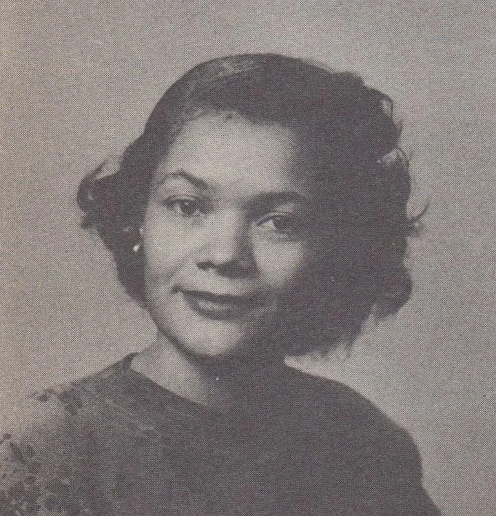
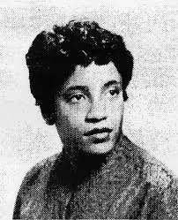

February is African American Heritage Month
Spotlight Scientists

Carolyn Parker (1917 - 1966)
Carolyn Parker was one of six siblings that all received degrees in math or natural science fields; she earned two master’s degrees from the University of Michigan and MIT for mathematics and physics, respectively, though she was unable to complete a doctoral degree at MIT because she developed Leukemia. Her Leukemia was likely developed as an operational hazard from her work on the Dayton Project — plutonium research for the Manhattan project. She was also an instructor for mathematics and physics at Bluefield State College before later becoming an assistant professor at Fisk University. She died at age 48 from her Leukemia.
Learn MoreSylvester James Gates (1950 - Present)
Gates is a theoretical physicist who earned two Bachelor’s degrees (in 1973) and a PhD in physics (in 1977) from MIT. Up until 2017 he worked at the University of Maryland on continuing his thesis work concerning supersymmetry, supergravity, and superstring theory, and he now continues this research at Brown University. His groundbreaking achievements also earned him a spot on President Obama’s Council of Advisors on Science and Technology, and he currently serves as the President of the American Physical Society. Among numerous other awards, he has also earned the Edward A. Bouchet award from the APS for his contributions in theoretical high-energy physics.
Learn More
Willie Hobbs Moore (1934-1994)
Willie Hobbs Moore was the first African-American woman to earn a PhD in physics, which she received in 1972 from the University of Michigan in Ann Arbor. During her time working on her doctoral thesis, which studied vibrational states of chloride proteins, she also worked at various technology firms and as an engineer. After receiving her doctorate, she continued working for the University of Michigan as a research scientist until she was hired by Ford in 1977, where she expanded their engineering and manufacturing methods. The University of Michigan has since established awards in her name to honor her achievements.
Learn MoreThe men and women in our spotlight changed the course of science over and over. However, there are uncountable more that accelerated our progress further. To learn more about these incredible people, follow the links below:
Mae Jemison: NWHM, Britannica, NASA
Elmer Samuel Imes: Physics Today, APS, AIP
Shirley Ann Jackson: Rensselaer, PBS, APS
James Edward Young: MIT, MIT